This weeks Assignment
|
Learning outcomes
|
Have you?
|
This week is about molding and casting.
My final prodcut will be a trophy of the Football World Cup.
The way goes along a process of milling a positive in a block of wax (wood also would be an option)
molding silicon into the block (getting a negative)
in the end you can cast the epoxy into the form and you will get your final product
|
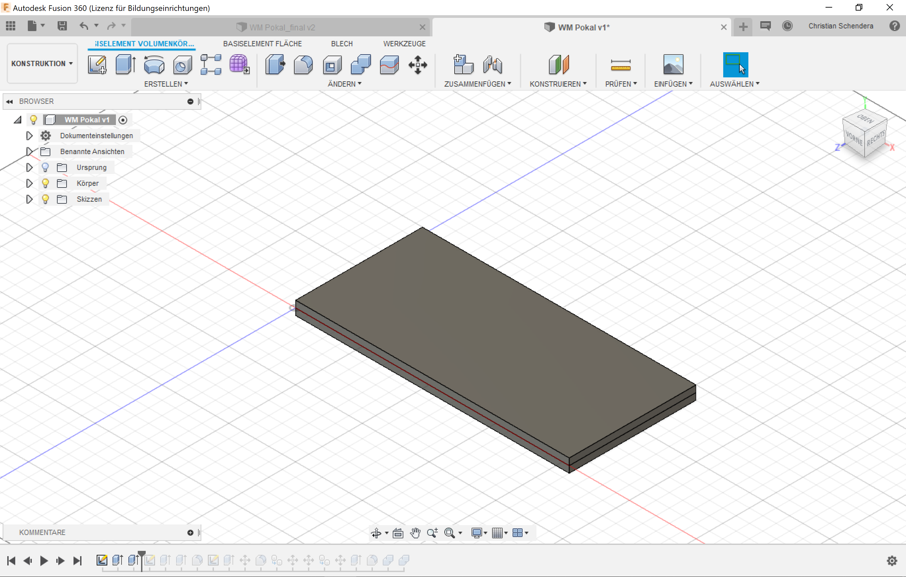
make 2 boxes with the size of your wax block |
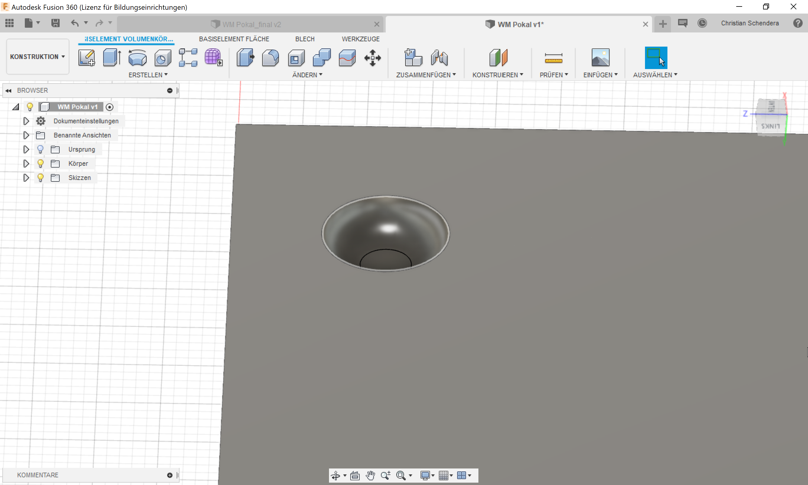
for alignment you need these notches on 2 corners |
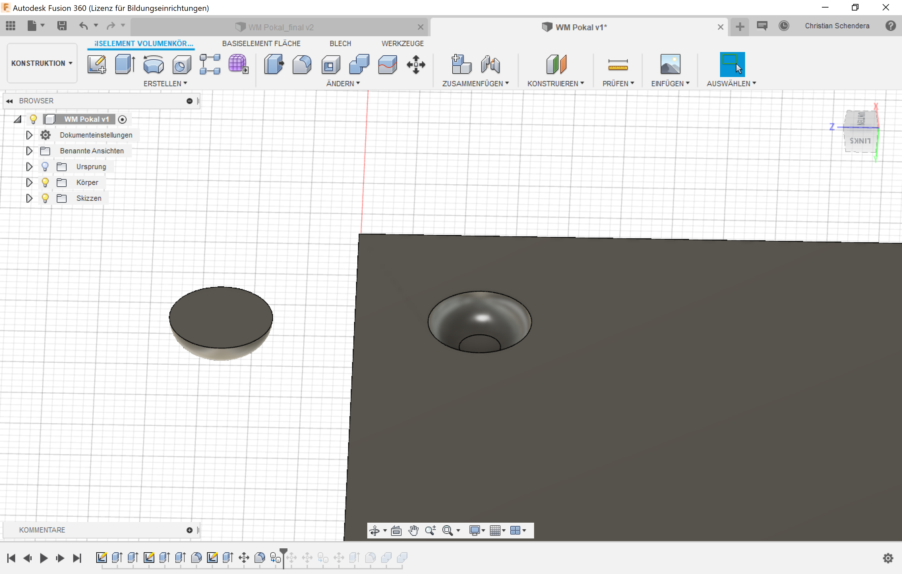
the same in the other way around |
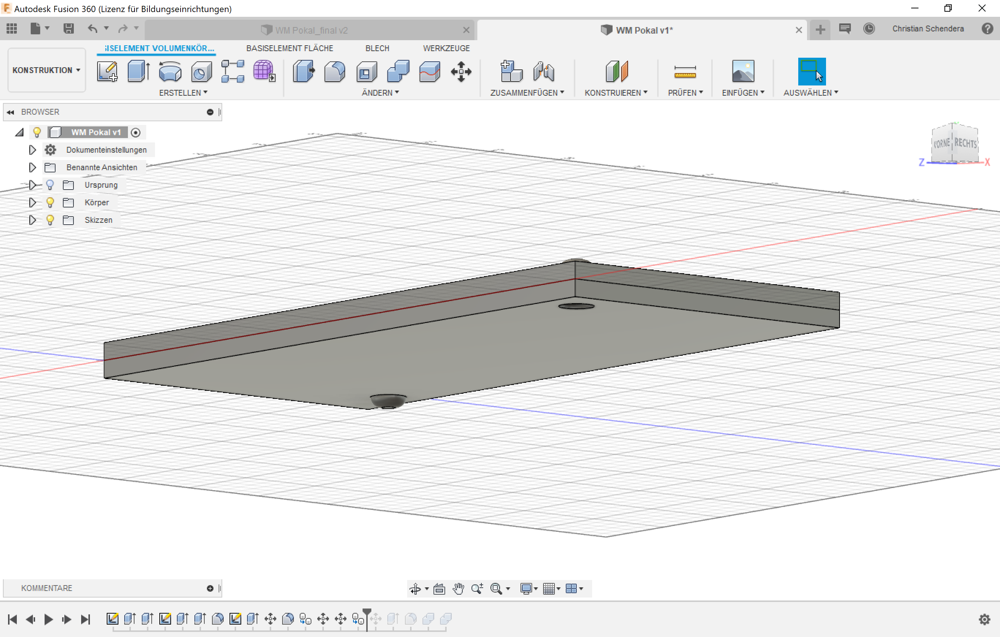
it has the perfectly be ordered on the other side |
|
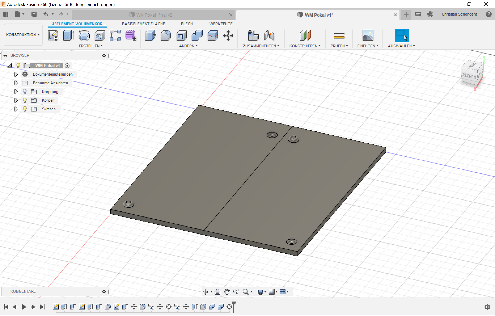
flip the one side next to the other |
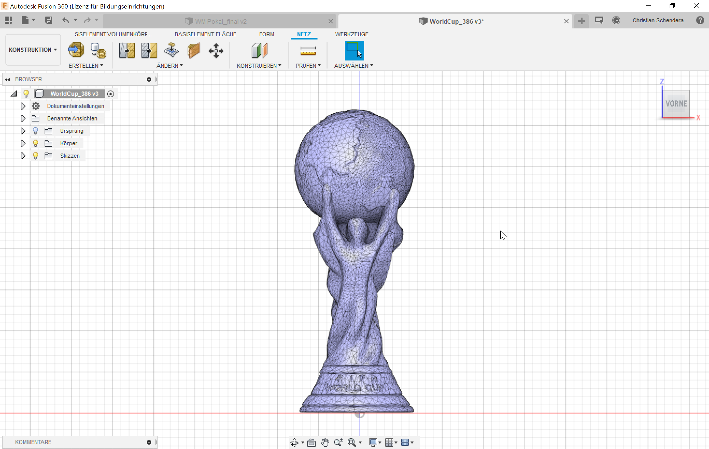
this is a 3d-model downloaded from the internet |
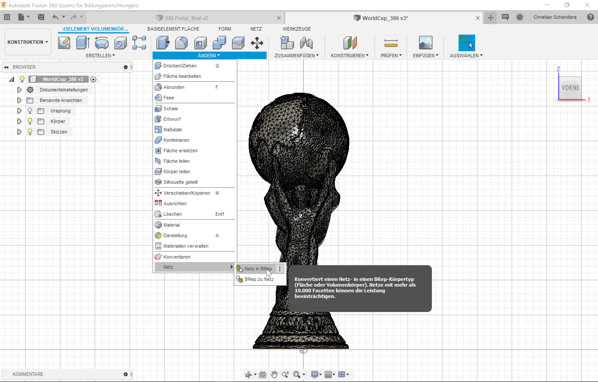
I had to convert it to a BRep |
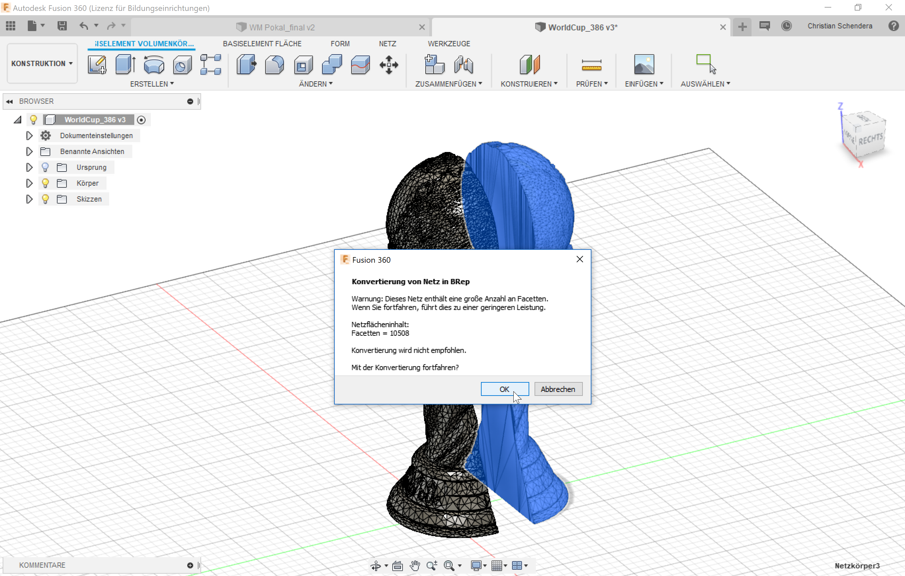
than subtract it in half |
|
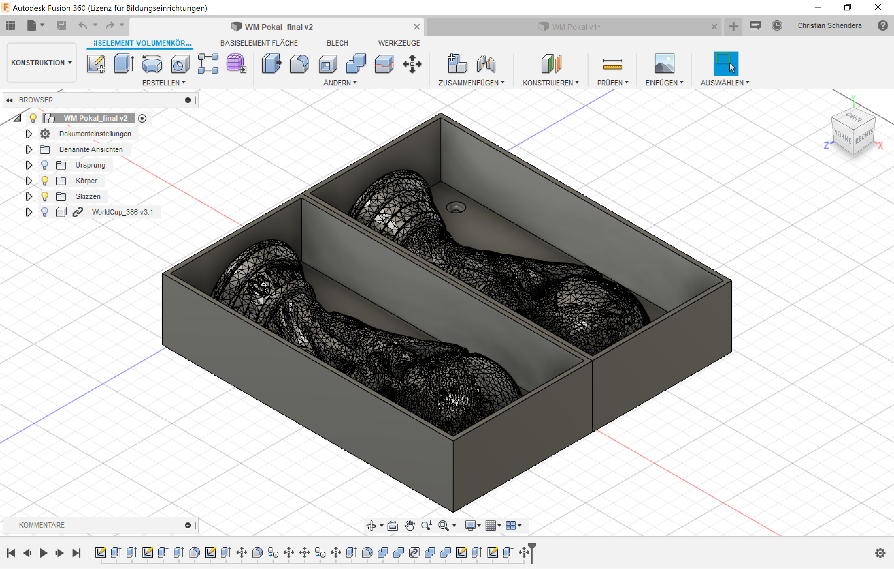
building walls around the bottom part and place the model in the middle |
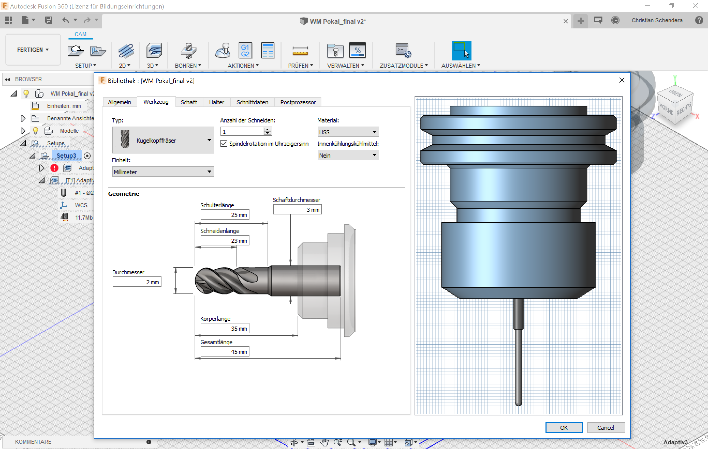
instruct the slicer acording to your used tools |
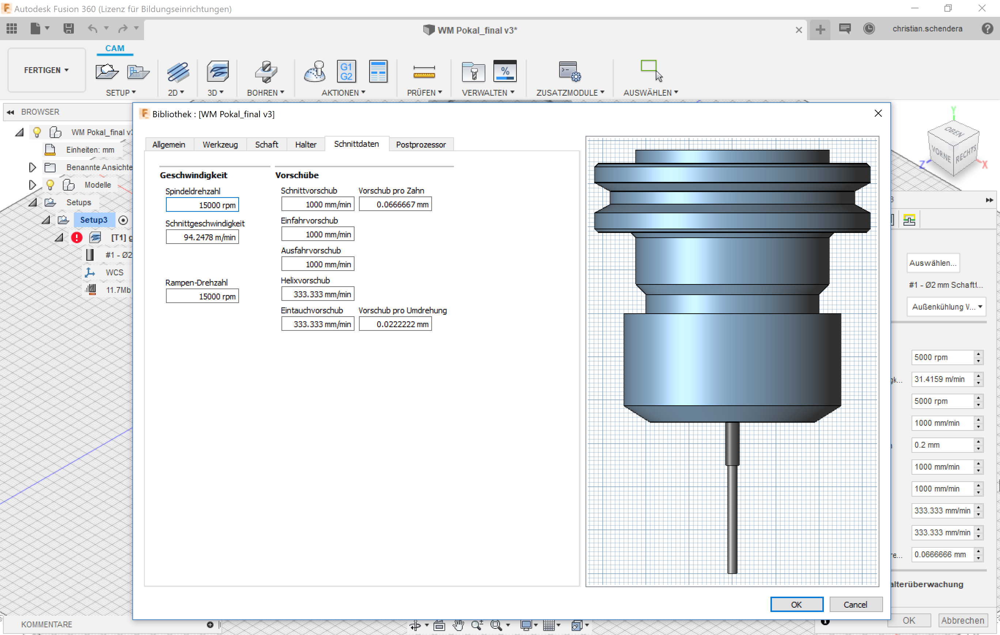
These are the instructions for speed |